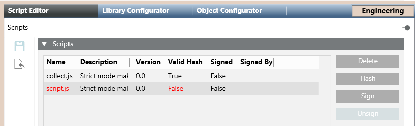
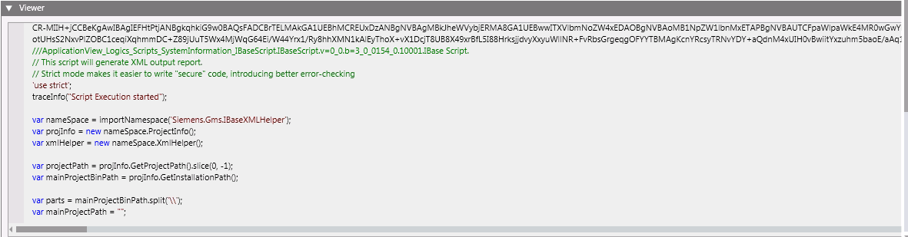
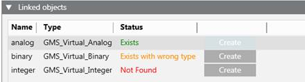

Scripts Libraries
Desigo CC scripts can be packaged into scripting libraries that allow further benefits and security features. For example, some Desigo CC extension modules provide scripts packaged in a library. Authorized librarians can also create scripting libraries.
Library scripts can be signed to certify that they are provided by an authorized developer. They can also be copy-protected and hashed to prevent tampering.
The list of scripts in a library can be viewed by selecting the scripts block of the library. For example, Project > System Settings > Libraries > L4-Project > […] > [scripting library] > [scripts block]. From here, it is possible to check the hash and signature of the library scripts and perform various operations on the library scripts.
However, to be able to execute a library script (whether manually or automatically) you still need to import it into Application View, so that it is added under Applications > Logics > Scripts. See Importing a Library Script into the Project.
Headquarter Scripting Library
When you integrate the Scripts extension, the L1-Headquarter Scripting library is added to the project, and System Manager provides an editor where you can write scripts, and commands for executing scripts. All these operations can be done without having to modify the provided library. And you can use the import/export functionality to transport scripts between projects, without relying on libraries.
However, for additional functionality and benefits, it can be useful to package scripts into a library. This will allow those scripts to be transported with all the versioning benefits of libraries. It is also possible to perform operations such as hashing, signing, or object association on the scripts included in a library.
Creation of a Scripting Library
To be able to package scripts into a library, you must first create a scripting library at your allowed customization level. You can do this either manually or using the customization mechanism.

Only Headquarter experts and Customer Support are authorized to modify the Scripting library at L1-Headquarter level.
Depending on the allowed customization level, authorized experts can customize, create, and modify scripting libraries, at L2-Region, L3-Country, or L4-Project level. Any new scripting library created at these lower levels coexists with the standard Headquarter scripting library and does not overwrite its data.
Scripts Editor Workspace [Library Block]
When you select the scripts block of a library in System Browser--for example, at Project > System Settings > Libraries > L4-Project > […] > [scripting library] > [scripts block]—the Script Editor tab lets you view and perform operations on the scripts packaged in that library. From here you can also import scripts to add them to this library. For instructions, see Configuring Scripts Libraries.
Scripts Expander
In the Script Editor tab, the Scripts expander displays the scripts contained in the selected Scripts library block.

Each script in the list is identified by name, description, version, and indications of whether the script is signed, has a valid hash, or is protected: Here you can add or remove scripts from the library, as well as hash, sign, unsign, or protect the scripts.
Viewer Expander
In the Script Editor tab, the Viewer expander displays the code of the script selected in the Scripts expander.

Linked Objects Expander
If a library script requires specific system objects to run properly, these can be manually linked to the script, so that the system can check for the presence of the required objects in the current Desigo CC project. See Link Objects to a Library Script and Create the Missing Objects Required by a Library Script.
The Linked Objects expander displays the list of the system objects that were linked to the selected script, along with a color-coded indication of whether that object is present in the current project.

Exists:The required object already exists, with the same name and same type.Not foundorExists with wrong type: The required object does not exist or exists with a different type. To fix this issue, click Create to add the missing object to the Desigo CC project.Type is not defined:The object type is not defined. To fix this issue, import the library that defines the missing type.
If a script is associated to any invalid object, the name of the script is highlighted in the color of the most critical issue (for example, red if a linked object is not found or its type is undefined).
Scripts may also require virtual objects that are used to interact with Desigo CC. For example, the average value of multiple analog points is not a field object (therefore it is virtual) but allows other Desigo CC applications to use it (for example, to check the trend of the value changes).
Hash of a Library Script
In the file system the .js files of these library scripts are stored under the corresponding libraries folder. For example, [Installation Drive]:\[Installation Folder]\[Project Name]\libraries\Global_Scripting_Project_1. To find the specific location, check the File System Path property in the Extended Operation tab, when you select the scripts block.
To protect these scripts against tampering, a hash value is computed at the time when they are imported into the scripting library. If the library script file is subsequently modified on disk (for example, using an external editor), in the Script Editor tab, the Scripts expander will display the script in red, with its Valid Hash field set to False.
If you are sure the modifications to the script are legitimate, you can either reimport  the script into the library or click Hash to compute a new valid hash for the script.
the script into the library or click Hash to compute a new valid hash for the script.
Protection of a Library Script
To protect intellectual property (IP), scripts in libraries can be delivered encrypted, so that the original source code cannot be recovered. A protected script is a binary file that contains the original script logic without the source code.
Script encryption is an irreversible process. Once you click Protect to scramble a script, it is not possible to retrieve the original source code from that file. For this reason, you must:
- Make a backup of the original script code before protecting.
In addition, since the contents of a protected script are not human-readable, it can be difficult to subsequently determine what it does. Therefore, it is recommended to:
- Provide a clear description of the script as a comment in the first line. When the protected script is imported into a project, this comment will display in the editor.
- Also sign the protected script, so that there is a readable indication of who is the author.
The following errors may occur after you attempt to protect a script:
Diagnostic Message | Description |
| The protect operation fails because the script contains syntax errors. Check and fix any errors, then try again. |
| It is not possible to save the backup of the original script. This might happen when the user has no rights to write the backup path. Try a different folder. |
| It is not possible to save the protected script. This might happen when the user has no rights to write the scripts library block path. |

Scripts protection availability
The protect feature is not available for Windows App clients.
Signing Library Scripts
Signing library scripts is strongly recommended:
- To certify that scripts are authored by authorized developers.
- To protect scripts against subsequent modification or tampering.
For instructions, see Sign or Unsign Library Scripts.
Authorized developers receive a certificate (.pfx file (private key) or a .cer file (public key) and use their private key to sign the certificate.
When a signed script is imported into the project, it becomes available for execution under Applications > Logics > Scripts. When you select the signed script:
- In the Extended Operation tab, the Signed By property displays the name of the script author.
- In the Script Editor tab, the Editor expander displays the code of the script. However, if the code of the script is modified here, the signature will be removed.
- The secondary header of the Script Editor tab also displays the name of the author and any diagnostic messages about the validation of the signature that script, namely:
Message in the secondary header |
|
|
|
|
Scripts Signature Validation
To avoid the execution of scripts that only apparently have a valid signature, it is possible to activate additional validation checks on script signatures at the certification authority level, to prevent execution of scripts with invalid signature.
Signature validation can be set individually for each script. It is also possible to define a default setting that applies these validation checks to all newly created or imported scripts. For instructions, see Validating Script Signatures.
NOTE: If signature validation is set for a script, the check is also carried out on any included scripts that are invoked by that script.